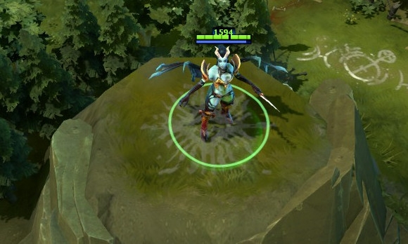
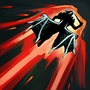

 痛苦女王
痛苦女王
背景故事
厄泽王庭的教皇有个隐秘的受虐癖——以品尝禁忌之痛为乐。即便是对那些普通政客而言这都是愚蠢至极的，而对于教皇而言，这种私欲已经威胁到了神权本身的纯洁和完整。于是他只好偷偷的去他的地牢里，求助于那一帮恶魔学识大师，承诺只要有人召唤一名完全为他服务的痛苦女妖，那就能获得自由。旋即魔女降世，名为阿卡莎，她给教皇带去了无与伦比的痛苦和刺激，教皇随即赐其隐秘皇后之位，并将所有闲暇时间用于享受她带来的花样百出的痛苦——最终，为了追求这种只有阿卡莎能带给他的痛苦，教皇放弃了他的所有职责。痛苦女王能让他体验濒死之欢愉，并因为受符文的限制而无法杀死他。终于，教皇的不理朝政引发了起义，他被愤怒的人们从密室里拖出来，然后从祈灵塔上扔了下去。然而，他的死亡却让痛苦女王获得了自由，不再被奴役，她将恣意的向世界挥洒她的痛苦。
暗影突袭 受到作用单位在持续时间内将逐秒缓慢地恢复初始移动速度。 魔法消耗：110
冷却时间：16.0/12.0/
|
闪烁 使用闪烁可以躲避多种飞行过程中的攻击和技能弹道。 魔法消耗：60/60/60/6
冷却时间：15.0/12.0/
|
痛苦尖叫 痛苦女王发出刺耳的尖叫，对周围敌人造成伤害。 痛苦尖叫能作用隐身单位。 魔法消耗：110/120/13
冷却时间：7.0/7.0/7.
|
超声冲击波 痛苦女王在她面前制造出强大的声波，对其轨迹上的所有敌人造成大量伤害。可用神杖升级。 超声冲击波最远能伤害距离1150码的单位。 魔法消耗：250/360/50
冷却时间：135/135/13
|